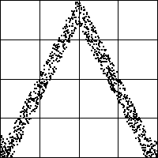
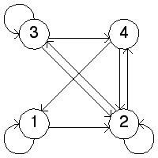

| 13. In the return map we see these allowed transitions |
| 1 → 1, 1 → 2, 2 → 2, 2 → 3, 2 → 4, 3 → 2, 3 → 3, 3 → 4, 4 → 2, 4 → 1 |
| From this we construct the transition graph on the right |
|   |
| Note these bins do not give a Markov partition. For example, from bin 2 we cover only part of bin 2. The IFS with memory using this transition graph produces the image based on forbidden pairs alone. Because this is not a Markov partition, longer-term memory effects will be visible in the driven IFS, so the IFS with memory and driven IFS will not produce the same images. |
Return to Homework 8 Practice.